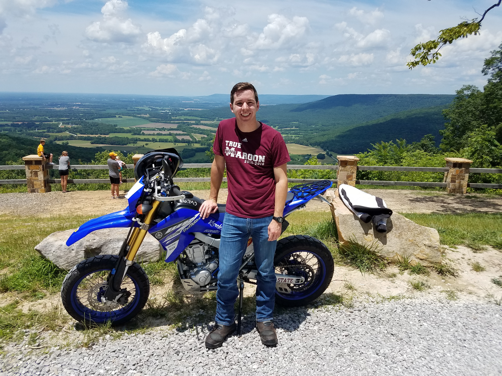
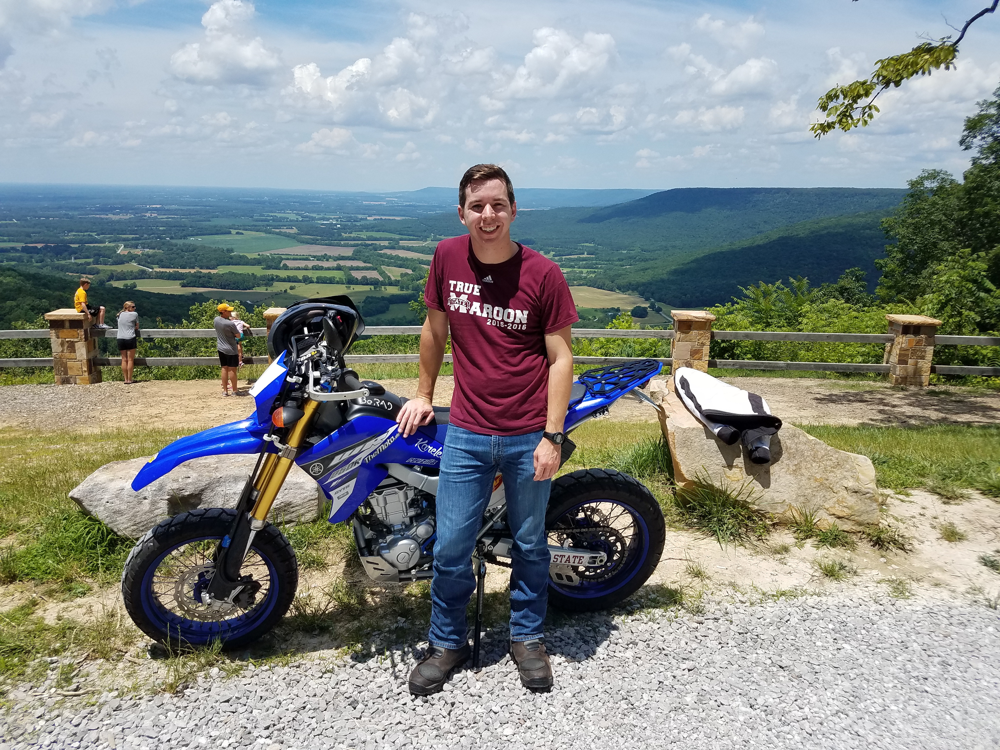

My Hobbies
 

Pictured above is my 2015 Yamaha WR250R. I love riding it around town and going off road or hitting trails with it. My roommate and I in Starkville work on our bikes together and do all the work ourselves. It's really a great way to learn about how an engine works, and he has taught me so much. I previously owned a 200cc 2-stroke bike, and we took the engine apart a few times. That was definitely a great learning experience, and I look forward to learning more about my WR250R's 4-stroke engine. Also, since it's a much newer bike, it has a lot of electrical components, and it's been pretty fun learning how innovative motorcycle companies have gotten with what all they can pack under the seat.
I also like to play some video games on my desktop. When I get the chance to play, I usually play Minecraft, Counter-Strike: Global Offensive, Grand Theft Auto V, and some short story type games too. During the school year I don't get to play too much. I didn't really start gaming much until I got to college and was surrounded by my computer engineering friends who encouranged me to build a PC. I've probably wasted too much time on some games, and I've definitely sunk a bit too much money into computer parts, but the experiences and the friendships I've built because of it are priceless.